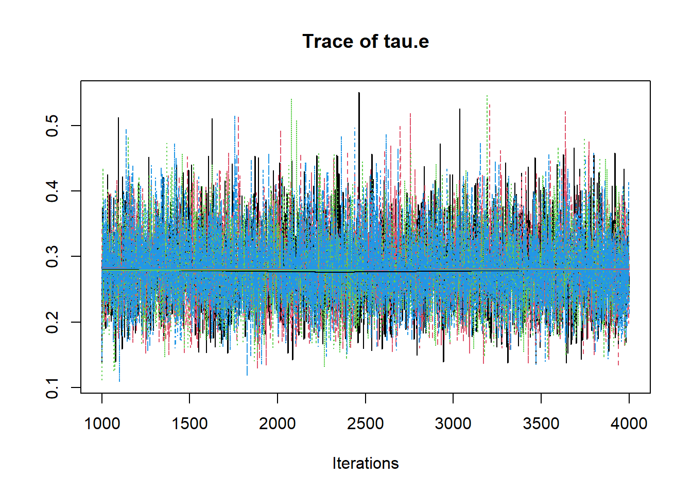
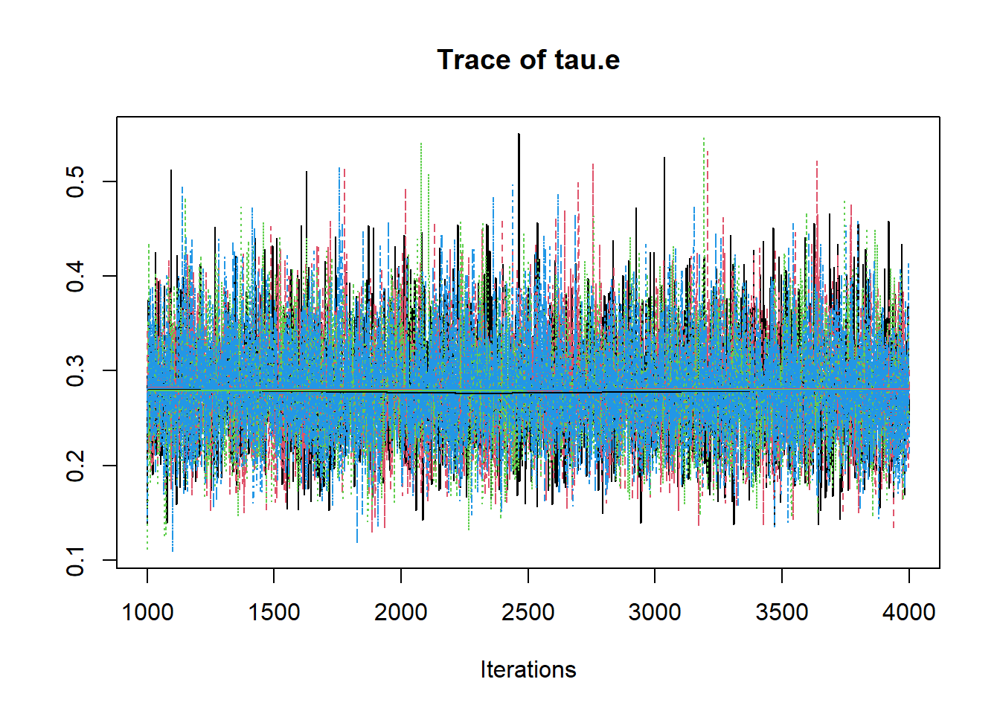

6.2 JAGS Model for Regression Model
# model code
jags.model <- function(){
############################################
# Prior distributions
############################################
beta.0 ~ dnorm(0, .001) # prior for the intercept
beta.1 ~ dnorm(0, .001) # prior for coefficient 1
beta.2 ~ dnorm(0, .001) # prior for coefficient 2
tau.e ~ dgamma(1, 1) # prior for the error precision
sigma.e <- 1/sqrt(tau.e) # standard deviation of the errors
############################################
# Conditional distribution of the data
# Via a regression model
############################################
for(i in 1:n){
y.prime[i] <- beta.0 + beta.1*x1[i] + beta.2*x2[i]
y[i] ~ dnorm(y.prime[i], tau.e)
}
############################################
# Calculate R-squared
############################################
for(i in 1:n){
error[i] <- y[i] - y.prime[i]
}
var.error <- sd(error[])*sd(error[])
var.y <- sd(y[])*sd(y[])
R.squared <- 1 - (var.error/var.y)
}
# data
dat <- read.table("data/Chp4_Reg_Chapter_Tests.dat", header=T)
mydata <- list(
n=nrow(dat),
x1=dat$Ch1Test,
x2=dat$Ch2Test,
y =dat$Ch3Test
)
# starting values
start_values <- function(){
list("tau.e"=0.01, 'beta.0'=0, "beta.1"=0, "beta.2"=0)
}
# vector of all parameters to save
param_save <- c("tau.e", "beta.0", "beta.1", "beta.2", "R.squared")
# fit model
fit <- jags(
model.file=jags.model,
data=mydata,
inits=start_values,
parameters.to.save = param_save,
n.iter=4000,
n.burnin = 1000,
n.chains = 4,
n.thin=1,
progress.bar = "none")## Compiling model graph
## Resolving undeclared variables
## Allocating nodes
## Graph information:
## Observed stochastic nodes: 50
## Unobserved stochastic nodes: 4
## Total graph size: 262
##
## Initializing model## Inference for Bugs model at "C:/Users/noahp/AppData/Local/Temp/RtmpqeqVce/modeleb01a5c9e8.txt", fit using jags,
## 4 chains, each with 4000 iterations (first 1000 discarded)
## n.sims = 12000 iterations saved
## mu.vect sd.vect 2.5% 25% 50% 75% 97.5% Rhat n.eff
## R.squared 0.584 0.019 0.536 0.578 0.590 0.597 0.601 1.040 4800
## beta.0 -2.547 1.936 -6.349 -3.824 -2.562 -1.272 1.279 1.001 12000
## beta.1 0.659 0.166 0.331 0.547 0.660 0.768 0.984 1.001 12000
## beta.2 0.383 0.103 0.179 0.314 0.382 0.452 0.582 1.001 12000
## tau.e 0.282 0.057 0.183 0.242 0.278 0.317 0.405 1.001 7600
## deviance 207.604 2.948 204.099 205.503 206.954 208.969 214.799 1.001 4800
##
## For each parameter, n.eff is a crude measure of effective sample size,
## and Rhat is the potential scale reduction factor (at convergence, Rhat=1).
##
## DIC info (using the rule, pD = var(deviance)/2)
## pD = 4.3 and DIC = 211.9
## DIC is an estimate of expected predictive error (lower deviance is better).


 

# convert to single data.frame for density plot
a <- colnames(as.data.frame(jags.mcmc[[1]]))
plot.data <- data.frame(as.matrix(jags.mcmc, chains=T, iters = T))
colnames(plot.data) <- c("chain", "iter", a)
plot_title <- ggtitle("Posterior distributions",
"with medians and 80% intervals")
mcmc_areas(
plot.data,
pars = c("beta.0", "beta.1", "beta.2", "tau.e"),
prob = 0.8) +
plot_title
# Expanded Posterior Plot
fit.lm <- summary(lm(Ch3Test ~ 1 + Ch1Test + Ch2Test, data=dat))
MLE <- c(fit.lm$coefficients[,1], 1/fit.lm$sigma**2, fit.lm$r.squared)
prior_beta <- function(x){dnorm(x, 0, 1000)}
x.beta <- seq(-5, 4.99, 0.01)
prior.beta <- data.frame(beta=x.beta, dens.beta = prior_beta(x.beta))
prior_tau <- function(x){dgamma(x, 1, 1)}
x.tau <- seq(0.01, 0.50, 0.01)
prior.tau <- data.frame(tau=x.tau, dens.tau = prior_tau(x.tau))
cols <- c("Posterior"="#0072B2", "Prior"="#E69F00", "MLE"= "black")#"#56B4E9", "#E69F00" "#CC79A7"
p1 <- ggplot()+
geom_density(data=plot.data,
aes(x=beta.0, color="Posterior"))+
geom_line(data=prior.beta,
aes(x=beta, y=dens.beta, color="Prior"))+
geom_vline(aes(xintercept=MLE[1], color="MLE"))+
scale_color_manual(values=cols, name=NULL)+
theme_bw()+
theme(panel.grid = element_blank())
p2 <- ggplot()+
geom_density(data=plot.data,
aes(x=beta.1, color="Posterior"))+
geom_line(data=prior.beta,
aes(x=beta, y=dens.beta, color="Prior"))+
geom_vline(aes(xintercept=MLE[2], color="MLE"))+
scale_color_manual(values=cols, name=NULL)+
lims(x=c(0, 1))+
theme_bw()+
theme(panel.grid = element_blank())
p3 <- ggplot()+
geom_density(data=plot.data,
aes(x=beta.2, color="Posterior"))+
geom_line(data=prior.beta,
aes(x=beta, y=dens.beta, color="Prior"))+
geom_vline(aes(xintercept=MLE[3], color="MLE"))+
scale_color_manual(values=cols, name=NULL)+
lims(x=c(0, 1))+
theme_bw()+
theme(panel.grid = element_blank())
p4 <- ggplot()+
geom_density(data=plot.data,
aes(x=tau.e, color="Posterior"))+
geom_line(data=prior.tau,
aes(x=tau, y=dens.tau, color="Prior"))+
geom_vline(aes(xintercept=MLE[4], color="MLE"))+
scale_color_manual(values=cols, name=NULL)+
theme_bw()+
theme(panel.grid = element_blank())
p5 <- ggplot()+
geom_density(data=plot.data,
aes(x=R.squared, color="Posterior"))+
geom_vline(aes(xintercept=MLE[5], color="MLE"))+
scale_color_manual(values=cols, name=NULL)+
lims(x=c(0.5, 0.65))+
theme_bw()+
theme(panel.grid = element_blank())
p1 + p2 + p3 + p4 + p5 + plot_layout(guides="collect")## Warning: Removed 226 rows containing non-finite values (stat_density).## Warning: Removed 899 row(s) containing missing values (geom_path).## Warning: Removed 3 rows containing non-finite values (stat_density).## Warning: Removed 899 row(s) containing missing values (geom_path).## Warning: Removed 52 rows containing non-finite values (stat_density).